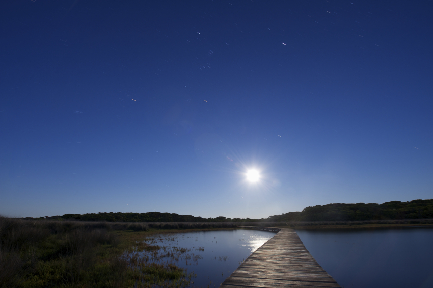
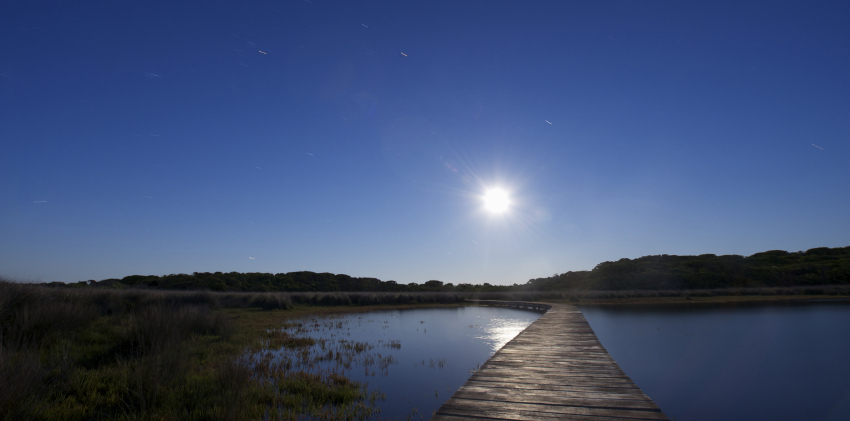
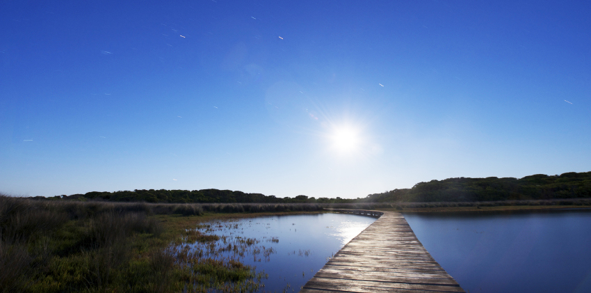
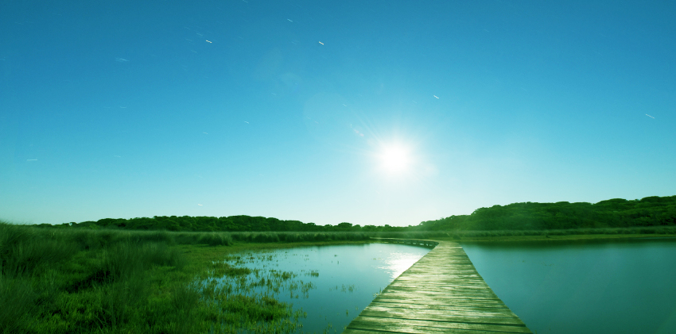
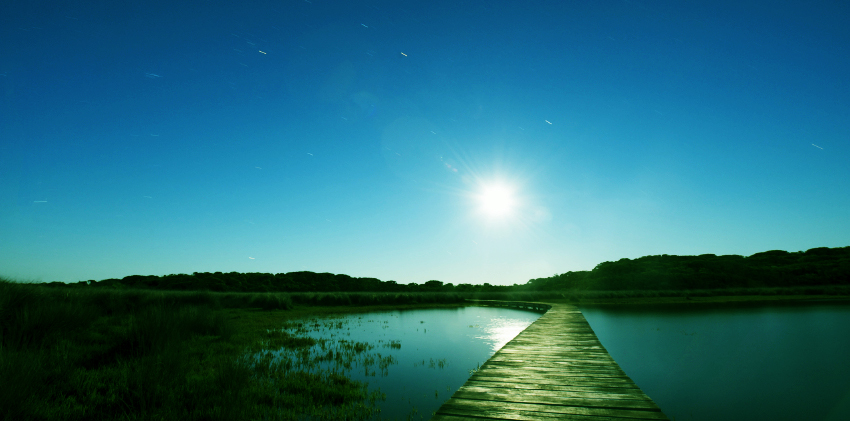

Back to homepage
Homework #6 Photoshop Assignment
The Original Photo:

Cropped to eliminate some extraneous sky:

Lightened the photo using the Brightness/Contrast setting:

Added a tinge of green using the Variations tool:

Adjusted the levels setting to create a vignette feel to the picture:
